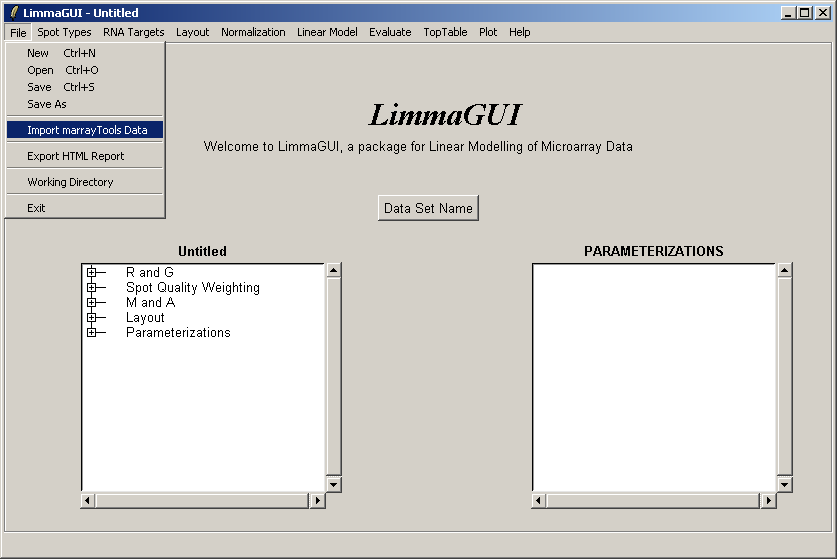
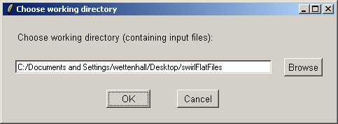
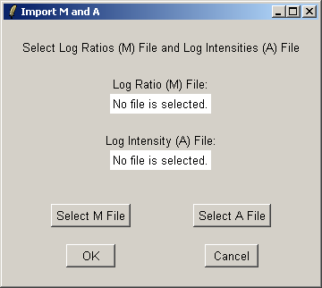
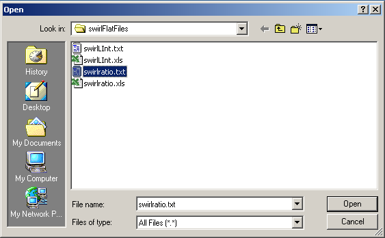
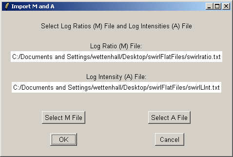
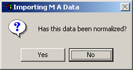
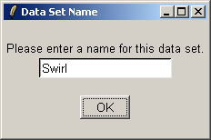

Currently the "Import" feature in the File Menu is designed specifically to imported tab-delimited text files of log-ratios and log-intensities output by the marrayTools functions gpTools and spotTools. These tab-delimited text files should have gene annotation information in the first few columns (like a GAL file), and then numerical data (log-ratios (M) or average log-intensities (A)). It is assumed that the last gene annotation column is non-numerical, so that limmaGUI can determine where the annotation stops and where the numerical data begins.
Select "Import marrayTools Data" from the File Menu.
Choose a working directory containing the data files to be imported.
Now use the "Select M File" and "Select A File" buttons to select the log-ratios file (M File) and the average log-intensities file (A File).
Below, a log-ratios file (M File) is being selected. It must be in tab-delimited text format.
Below, both the M File and the A File have been selected.
You must tell limmaGUI whether the imported data has been normalized or not. If you are importing raw data, you will have full control over the normalization options in limmaGUI. If you are importing normalized data, limmaGUI will not allow you to renormalize it,
Give the data set a name.
